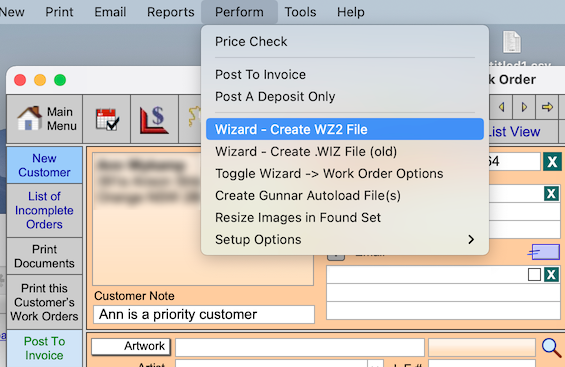
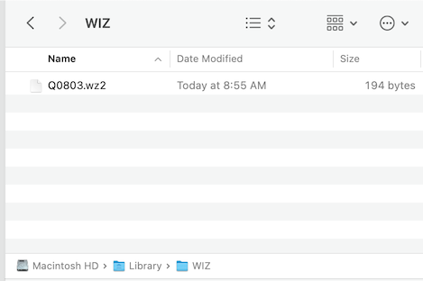
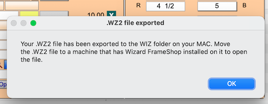

CMC Wizard FrameShop Mac Support
FrameReady is integrated with the Mat Designer program ‘FrameShop’ by Wizard.
-
While the FrameShop software is only available for Windows, we have added a feature to export a .WZ2 file on your Mac computer.
-
After export, you can move it to a Windows computer with FrameShop installed on it.
How to Export a .WZ2 file on a Mac
Use the updated Perform > Wizard - Create .WZ2 file option to export a .WZ2 file on your Mac -- so that you can move it to a Windows computer with FrameShop installed on it.
Set up the Working WIZ Folder
-
Open Finder.
-
In the file menu bar, click Go and choose Computer.
-
In the list of drives and network locations, double-click the Startup Volume. This is usually called Macintosh HD but it may have been renamed.
-
Double-click the Library folder.
-
Create a new the Wizard folder on your Mac hard drive to store the .WZ2 files.
The path is: “Macintosh HD/Library/WIZ”
Your Mac may ask for the administrator password in order to create this folder.

-
In Finder, right-click the WIZ folder and choose Get Info.

-
At the bottom of the Info window are the folder Sharing & Permissions.

Set all three of the options to: Read & Write -
Close the Info window. Now the folder has the correct permissions for the software to be able to create the .WZ2 files
Export a .WZ2 file
-
When you have the WIZ folder created and permissions set correctly, then locate an appropriate Work Order.
-
In the file menu bar, click Perform and choose Wizard - Create WZ2 file

-
This generates the WZ2 file, in the new folder.

-
A pop up dialog menu alerts you when the process completes.
You can then take the WZ2 file and move it to a PC with the Wizard FrameShop installed on it. The filename is the number of the Work Order number that you generated the WZ2 file for.

© 2023 Adatasol, Inc.